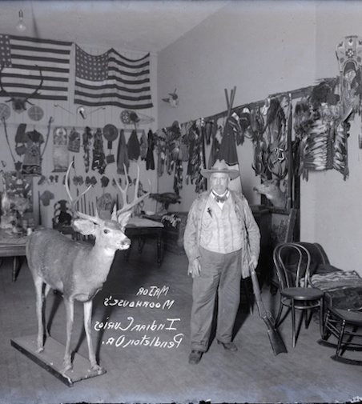
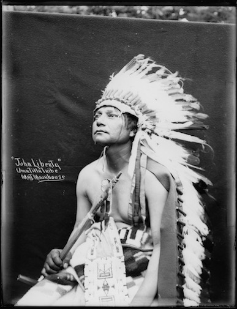
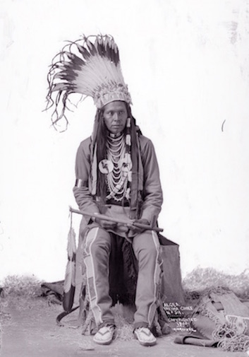

Moorhouse Collection
By Anna Lieberman



The University of Oregon Library
The University of Oregon library has a room that is home to over 3,000 collections of rare and historical items. It includes everything from Medieval manuscripts to an Animal House collection. This is special collections.
Take a look around.
Design @DavidBaggs | Web Development @Sierra_morgann
By Anna Lieberman
By Jennifer Fleck
The classic 1946 film starring Jimmy Stewart, It's a Wonderful Life, got its origin from a short story housed in the university archives.
The short story “The Greatest Gift” was written by Phillip Van Doren Stern in 1943. The original manuscript is kept in special collections.
"It makes him notable," said Linda Long a manuscripts librarian.
The short story follows a suicidal man who then meets a guardian angel who shows him what his hometown would be like if he had never been born.
The Hollywood version added the now well-loved supporting characters like Uncle Billy, Violet, Mr. Gower, Bert and Ernie.
At the time Stern wrote the 4,000 word story, he could not find a publisher, so he sent it out as Christmas cards. A business associate who received the card passed it along to RKO Radio Pictures. At RKO, Frank Capra, the film's director, came across it.
RKO paid Stern $10,000 for the motion picture rights. Capra contributed to write the screenplay along with Frances Goodrich and Albert Hackett
The film is now known as a classic, trotted out every Christmas.
Stern was a known historian who authored around forty books on subjects like the Civil War and Edgar Allen Poe.
By Jennifer Fleck
The Occupy Eugene memorabilia housed within special collections includes a number of flyers, photos and notes documenting the protest still continuing in parallel with the Occupy Wall Street movement.
The university archives and special collections began collecting memorabilia in 2011.
"The occupy movement is the protective response of civil society to a financial debacle our governments cannot address because global banks and financial institutions have taken control of our governing process. It is the terrible financial crisis we face that makes Occupy Eugene necessary," states the Occupy Eugene vision statement.
They visited the encampment when they were located at the Washington Jefferson Park, talked to people and took photos.
"Everyone was really nice," manuscripts librarian Linda Long said. Long called their camp "impressive" and "organized." Citing their library, women's area, day care and medical tent.
The Occupy Eugene collection holds artwork, posters, flyers, ephemera, meeting notes and agendas spanning several years. A yellow spiral notebook has the title "Meeting Notes" scrawled across the top in Sharpie. Photos show the depth of the large population of the camp, as well as their organization.
Occupy Eugene continues their work. Their most current newsletter, The Eugene Occupier, takes on such issues as police reform, GMO's and Global Warming.
Special collections began their collection of the Occupy Eugene documents because "It's part of our job," said Long.
By Sydney Zuelke
Animal House’s decades old footage brings a sense of familiarity
Many college students aim to leave a legacy in the short amount of time they have as carefree students. For a lucky bunch, their legacy lives on nearly 40 years after their time at the University of Oregon – this was the class of Animal House.
The year is 1978 and a group of bell-bottom blue jean wearing college kids are lounging with their backs against a dusty cherry red Ford Cortina. The sun has gone down but the city of Eugene is alive. Somewhere in the distance the late, great John Belushi can be seen signing autographs for a group of giggling girls.
In the trenches of the university library lies a hidden gem: the special collections. In the collection is a compilation of old footage and news segments from the filming of the Hollywood hit, Animal House. The digitized reels of film show that, for students, this was one of the most thrilling times for the city of Eugene.
“It’s madness, but it’s really exciting madness,” a female student sporting wide-rimmed glasses and some serious bangs said in an interview with a local news station. She was one of many UO students chosen to be an extra in the motion picture.
“Animal House” clip reel produced by KEZI-TV Channel 9, Eugene, Oregon. Archival footage from KEZI-TV, Chambers Communications Corp., Coll 427, Special Collections & University Archives, University of Oregon Libraries. Copyright University of Oregon Libraries. All rights reserved.
The madness continued eight years after the film’s conception, when the “Delta Tau Chi” a.k.a. Animal House on E. 11th Avenue was demolished. It was captured on film, which is also a part of the archives.
A bulldozer sits in front of the dumpy white house, whose shutters are dangling and furniture is arranged atop the roof. As a mystery man throws a soggy armchair from the second story, the crowd goes wild – students have gathered around, boom-box and beer in hand to commemorate the legendary landmark.
“It’s another reason to get together with the boys (and drink some beer). But more importantly we’re together here and showing we love fraternities,” a male student says in an interview with KEZI. “(Belushi) would have wanted us to do this – it’s in his memory that we’re out here.”
Although we weren’t able to leave our legacy on the big-screen, we share the pride of having this ever-lasting connection to the iconic film and bask in the familiarity we feel when watching Belushi suck down jello in the Fishbowl, or ROTC members march along Hayward Field. They are the same old streets we walk along in search of toga parties, even today.
“It’s a piece of our culture, 50 years from now that movie is going to be history,” a woman said, standing nearby as the ‘Animal House’ was being torn down in 1986. She was right.
By Jennifer Fleck
There is a pile of papers, obviously typed on a typewriter, that from far away is indistinguishable from any other typewritten manuscript. But, upon closer look, familiar names like Nurse Ratched, McMurphy and Chief dance before the eyes. It is the original manuscript of the well known story One Flew Over the Cuckoo's Nest.
Ken Kesey's works, the best known being One Flew Over the Cuckoo’s Nest, have had a home at the Knight Library since the late sixties, when he put some on deposit in the late sixties.
He came to see his works throughout the years until his death in 2001. Between 2001 and 2013, collection researchers and scholars were required to get the permission of Kesey's widow, Faye Kesey, in order to view the collection.
In 2013, the University of Oregon gained the property rights to the collection, which include the original manuscript for One Flew Over the Cuckoo's Nest, the original screenplay for Sometimes a Great Notion, letters and illustrations composed of dizzyingly bright colors sent to various friends by Kesey and his “Jail Journal,” a journal he kept during his time in jail, which was published after his death.
The items within the collection are largely personal, including letters Kesey signed with his dog's paw print in paint.
Former UO President Gottfredson purchased the collection to fund its preservation. The library began fundraising to pay back Gottfredson, collaborating with businesses like Voodoo Doughnut, Rogue Ales and Townshend's Eugene Teahouse.
By Eric Schucht
By Eric Schucht
Behind the massive iron doors of the Knight Library and up the grand staircase lies a hallway leading to a peculiar room. It is home to the rarest and most valuable items the University of Oregon possesses. You walk past a collection of U.S President signatures displayed under glass cases like those in a museum. The walls are lined with books that would make Belle from Beauty and the Beast jealous, and the ceiling molding and framed art work would fit right in a scene from Downton Abbey. People sit at tables, leafing through old, dog-eared books. Periodically, you’ll hear someone cry out in joy — after they’ve spent hours searching, they’ve finally found the document they were looking for.
This is the special collections and is free for all students and faculty to use.
“There is an intimacy with the person who wrote the document when you can see the handwriting on the page” Elizabeth Peterson
The special collection university archive was formed in 1947 through the merging of multiple book collections from around the state, including the Oregon Collection, which is one of the university's earliest collections containing state artifacts like pioneer diaries, and the Burgess collection, a collection of books and manuscripts dating back to over 1,000 years ago.
Comprised of over 3,000 different collections and totaling over a million items, special collections safeguards the university’s most treasured relics such as Medieval manuscripts,comic books, 4,000 year old Babylonian tablets and postage stamps.
The paintings that line the room are a part of a collection donated after its previous owners had passed away. A typewriter, a couch and various busts are just a few of the unique items that decorate special collections.
Librarians are there to help anyone who wanders in. They speak with excitement, and often launch into passionate lectures on history, rare books or any other information they can share. Each librarian in special collections is well-trained, with a degree either in librarianship or archival management. Many have worked at well-known museums and libraries, such as Yale, Stanford and the Smithsonian.
“We have to anticipate what people might want to do research on in the future,” said Linda Long, a senior librarian.
The documents are stored in boxes and folders in a room that is off-limits. Photos and videos are placed inside of a former classroom, now turned into a giant refrigerator on the third floor of the library in order to properly preserve them.
“Our mandate is to preserve them forever,” said Elizabeth Peterson, a humanities librarian and curator of moving images.
Special collections can be intimidating to some students, explained Peterson. Unlike the the general collection, where students can freely grab books off of shelves, the special collections requires all materials be brought to you by a librarian.
A lot of times, students will have an emotional experience after combing through the documents, Long said. It’s very rare to hold something owned by someone famous, let alone hand written.
“There is an intimacy with the person who wrote the document when you can see the handwriting on the page,” Peterson said.
The items in special collections are a basic source of knowledge. The information here is what researchers use to write their books. People from as far away as Japan and South America have come to the library to look at the source material.
“We have all these incredible resources to use for them,” Long said.